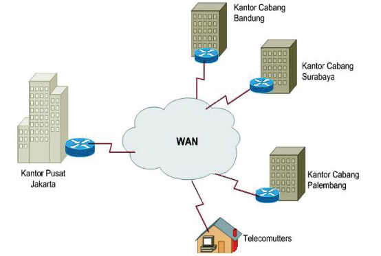
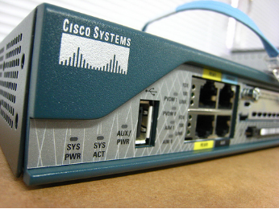
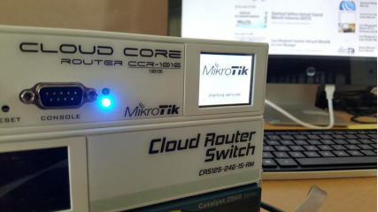
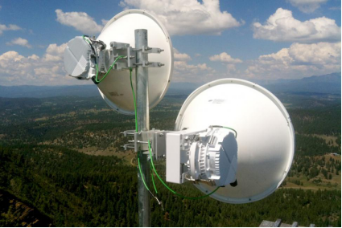
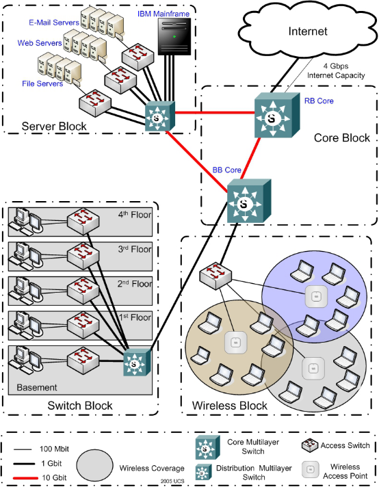
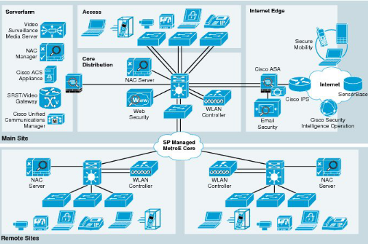
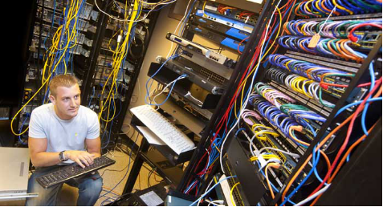
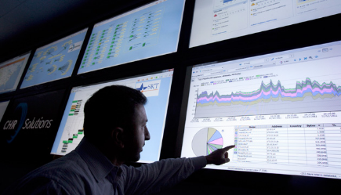
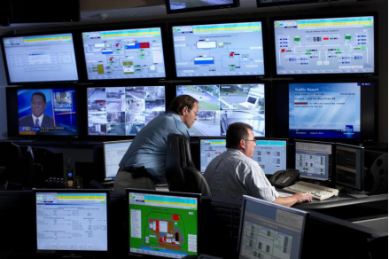

Teknik Komputer & Jaringan
Teknik Komputer & Jaringan (TKJ) merupakan salah satu program keahlian SMK yang bergerak di bidang Informasi dan Teknologi. Siswa jurusan TKJ dididik untuk mampu melakukan installasi jaringan komputer, baik itu jaringan komputer dalam rumah / kantor, antar kantor, antar kota, antar provinsi, bahkan antar negara.

Dalam sebuah perusahaan, jaringan komputer merupakan hal yang wajib. Setiap komputer yang berada di kantor harus bisa terhubung dengan komputer lainnya. Selain itu setiap komputer juga harus terhubung ke internet untuk mengumpulkan informasi.
Jika sebuah perusahaan memiliki kantor cabang, maka antara kantor pusat dan kantor cabang juga harus saling terhubung, hal ini dikarenakan banyak sekali komunikasi yang perlu dilakukan antara kantor pusat dan kantor cabang.
Tidak cukup hanya terhubung saja, jaringan komputer yang dibentuk antar kantor harus memiliki efiseinsi dan kecepatan yang tinggi, sehingga pertukaran informasi yang dilakukan antar kantor bisa berjalan dengan baik.
Materi yang dipelajari Siswa TKJ
Dari waktu ke waktu, kebutuhan manusia akan jaringan komputer terus meningkat. Setiap orang menuntut untuk bisa terhubung dengan orang lain walau terhalangi oleh jarak yang ratusan atau bahkan ribuan kilo. Setiap orang menuntut untuk dapat memperoleh informasi dengan cepat dan akurat.
Dengan segala tuntutan tentang jaringan komputer tersebut, siswa TKJ harus dibekali dengan meteri-materi yang sesuai dengan kebutuhan di dunia kerja. Sehingga siswa lulusan TKJ memiliki skill untuk memenuhi segala tuntutan jaringan komputer di masa depan.
Materi yang akan dipelajari oleh siswa jurusan TKJ diantaranya adalah sebagai berikut :
Cisco
Cisco merupakan salah satu perangkat jaringan (network device) terhandal yang saat ini beredar di dunia. Cisco biasanya digunakan untuk membangun jaringan skala menengah hingga besar. Hampir seluruh perusahaan besar di Indonesia pasti menggunakan cisco untuk membangun jaringannya.
Dalam rangka mempersiapkan siswa TKJ untuk dapat terjun ke dunia kerja, maka siswa TKJ dibekali dengan materi tentang cisco. Adapun materi-materi cisco yang akan dipelajari oleh siswa TKJ diantaranya adalah sebagai berikut :
| VLAN & Trunking | Spanning Tree | Etherchannel |
| Intervlan Routing | VRRP | Portsecurity |
| Routing Fundamental | EIGRP | OSPF |
| BGP | IPv6 | MPLS |
Materi diatas hanya sebagian kecil yang akan dipelajari di jurusan TKJ. Dengan menguasai materi-materi diatas, diharapkan siswa TKJ mampu membuat design (merencanakan) serta membangun jaringan skala menengah hingga besar
Mikrotik
Selain cisco, saat ini juga beredar perangkat jaringan yang sangat terkenal, yaitu Mikrotik. Mikrotik banyak digunakan pada jaringan skala kecil hingga skala menengah. Di Indonesia, mikrotik berkembang dengan sangat pesat. Hampir seluruh Internet Service Provider (Penyedia layanan internet) lokal menggunakan mikrotik sebagai perangkat jaringan utama. Selain itu, mikrotik juga banyak digunakan di perhotelan, perkantoran, jaringan sekolahan, dll.
Beberapa materi tentang yang dipelajari oleh siswa TKJ diantaranya adalah sebagai berikut :
| Bridge | Wireless | Static Routing |
| Firewall Filter | Firewall Mangle | Firewall NAT |
| Quality Of Service | Hotspot | VPN |
| IP Tunnel | OSPF | Load Balance |
| BGP | MPLS | User Manager |
Materi-materi diatas hanya sebagian kecil dari materi mikrotik yang akan dipelajari oleh siswa TKJ. Dengan menguasai materi-materi diatas, diharapkan siswa TKJ dapat mendesain dan membangun jaringan skala menengah
Wireless
Materi yang tidak kalah penting dari cisco dan mikrotik yang harus dipelajari oleh siswa jurusan TKJ adalah wireless. Hal ini dikarenakan banyak jaringan didunia yang dibangun diatas jaringan wireless, baik wireless indoor (dalam ruangan) maupun outdoor (luar ruangan).
Wireless indoor biasa digunakan untuk menghbungkan client ke jaringan internet, seperti HP, Gadget, Laptop, dll. Saat ini hampir setiap bangunan di dunia pasti memiliki jaringan wireless. Terbukti setiap kita pergi ke suatu tempat, pasti ada hotspot yang terdeteksi di HP atau gadget kita. Sedangkan wireless outdoor digunakan untuk jaringan yang berjauhan, seperti jaringan antara Jakarta dengan Surabaya, jaringan antara Tangerang dengan Malang, dll.
Untuk saat ini, terdapat tiga perangkat jaringan wireless yang banyak digunakan, yaitu cisco wireless, mikrotik wireless, dan ubiquiti. Siswa TKJ diharuskan mampu melakukan konfigurasi pada ketiga perangkat wireless tersebut dengan baik.
Prospek Kerja Siswa TKJ
Untuk saat ini, prospek kerja untuk siswa TKJ sangatlah besar, karena saat ini dunia internet berkembang dengan pesat dan internet dibangun oleh Network Engineer (Siswa TKJ). Beberapa gambaran prospek kerja sisa TKJ diantaranya adalah sebagai berikut
Network Designer
Tugas dari network disainer adalah membuat rancangan sebuah jaringan, mulai dari rancangan bentuk jaringan (topologi jaringan), biaya yang dikeluarkan, hingga konfigurasi yang paling efisien untuk membangun sebuah jaringan komputer.
Jaringan yang ditangani diantaranya adalah jaringan perkantoran ataupun antar kantor (LAN), jaringan antar kota (MAN), serta jaringan antar negara (WAN). Network desainer dituntut untuk mampu mendesain jaringan yang efektif, baik dari segi biaya, efektifitas perangkat yang digunakan, efektifitas jaringan yang dibangun, dll. Berikut salah satu contoh design jaringan komputer yang dibuat oleh network designer
Network Engineer
Tugas dari seorang network engineer adalah membangun sebuah jaringan. Jaringan yang akan ditangani oleh network engineer diantaranya adalah jaringan dalam sebuah kantor, antar kantor, antar kota, atau bahkan jaringan antar provinsi atau negara.
Untuk membangun jaringan komputer dengan skala menengah hingga besar, seorang network engineer dituntut untuk menguasai materi tentang cisco dan mikrotik dengan sangat mendalam. Selain itu seorang network engineer harus memiliki logika yang tinggi dan kemampuan problem solving (memecahkan masalah).
Network Operating Center
Sebuah jaringan komputer tidak akan selamanya berjalan dengan baik. Ada kalanya atau bahkan sering, jaringan komputer mengalami masalah-masalah yang terduga. Masalah-masalah ini bisa disebabkan oleh beberapa hal, seperti human error (kesalahan manusia), bencana alam, gangguan dari orang-orang yang tidak bertanggung jawab (cyber crime), dll.
Untuk mengatasi masalah-masalah yang mungkin terjadi tersebut, harus ada orang yang melakukan monitoring jaringan, sehingga jika sewaktu-waktu jaringan mengalami masalah, masalah tersebut dapat diatasi dengan secepat mungkin.
Pekerjaan untuk melakukan monitoring dan maintenance (perbaikan) jaringan adalah tugas dari engineer yang bekerja dibagian Network Operating Center (NOC).
